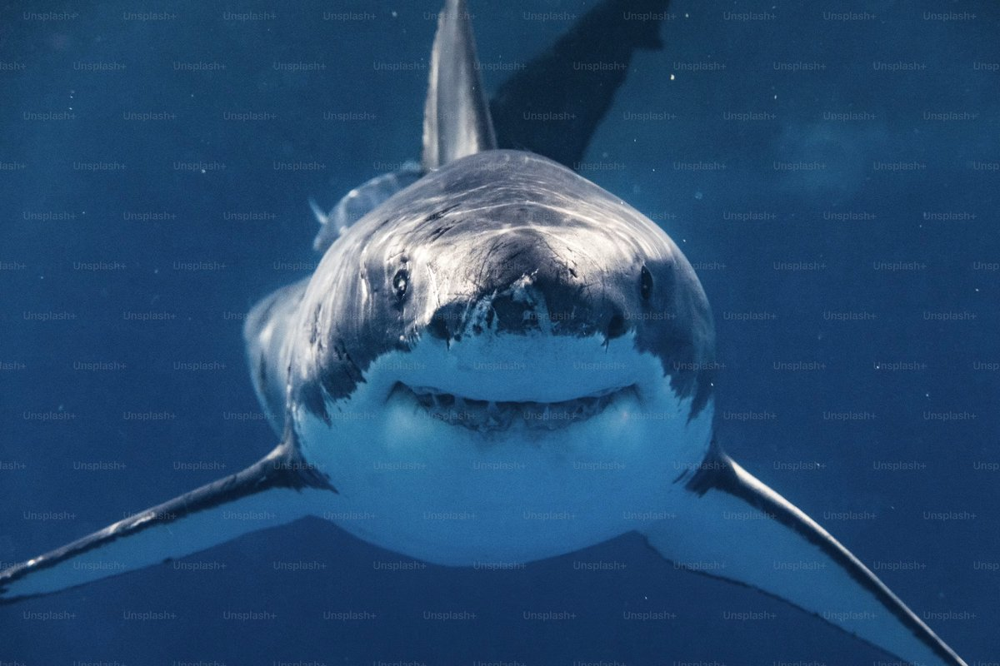
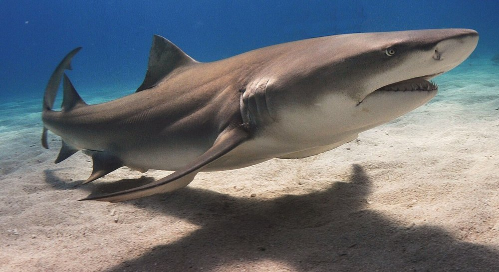

In spite of the reputation people like to give sharks through movies like the Jaws series, sharks rarely hunt humans. In fact, you are more likely to die by coconut compared to a shark attack. However, according to the Florida Museum of Natural History, around 10 million sharks are hunted for every singular person killed by a shark. This site is dedicated to educating people about sharks, ranging from each type of shark to the various hunting styles of sharks.
Sharks are a type of cartilaginous fish belonging to the Chondrichthyes classification of fish, because of their lightweight skeletons. Thanks to their lightweight skeletons, sharks are able to stay afloat in water and chase down their prey with no effort.


External Source 1: NOAA Fisheries
External Source 2: International Fund for Animal Welfare